তিন চোখে একই রাষ্ট্র — মানুষ, কর্মকর্তা, রাজনীতিবিদ।
পার্ট এ
মানুষের চোখে
অধ্যায় ১
ভোরের লাইনে দাঁড়ানো মানুষ
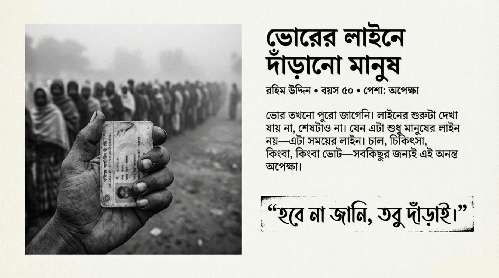
যে লাইনের শুরুও দেখা যায় না, শেষটাও না।
ভোর তখনো পুরো জাগেনি। আকাশে হালকা কুয়াশা, মাটিতে শিশির, আর মানুষের চোখে একধরনের অচেনা অপেক্ষা।
স্কুলের সামনে লম্বা লাইন। কেউ চুপচাপ দাঁড়িয়ে, কেউ কথা বলছে নিচু গলায়। লাইনের শুরুটা দেখা যায় না, শেষটাও না। যেন এটা শুধু মানুষের লাইন নয়—এটা সময়ের লাইন।
রহিম উদ্দিন দাঁড়িয়ে আছে লাইনের মাঝখানে। বয়স পঞ্চাশ ছুঁইছুঁই। হাতে জাতীয় পরিচয়পত্রটা এমনভাবে ধরা, যেন হারিয়ে গেলে আবার নিজের অস্তিত্ব হারাবে।
সে মনে মনে হিসাব করে— শেষ কবে সে এভাবে লাইনে দাঁড়িয়েছিল? চাল কিনতে দাঁড়িয়েছিল। হাসপাতালে টিকিট কাটতে দাঁড়িয়েছিল। কিন্তু আজকের লাইনটা আলাদা। আজ সে দাঁড়িয়েছে রাষ্ট্রের সামনে।
পেছনে দাঁড়ানো তরুণ ছেলেটা ফিসফিস করে বলে, — “কাকা, কিছু হবে তো?”
রহিম তাকায় না। সামনে তাকিয়েই বলে, — “হবে না জানি, তবু দাঁড়াই।”
এই দাঁড়িয়ে থাকাটাই যেন তার শেষ ভরসা।
অধ্যায় ২
ভোটের দিন, ভয় আর অপেক্ষা
ভোটের দিন মানেই উৎসব ছিল একসময়। রঙিন পোস্টার, হৈচৈ, মানুষে মানুষে কথা।
এখন ভোটের দিন মানে—নীরবতা।
রহিমের স্ত্রী আয়েশা ঘর থেকে বের হওয়ার আগে একবার বলেছিল, — “ঝামেলা হবে না তো?”
এই প্রশ্নে শুধু ভয় নেই, আছে ক্লান্তি। বারবার একই প্রশ্ন করতে করতে মানুষ একসময় প্রশ্ন করাও ছেড়ে দেয়।
কেন্দ্রের ভেতরে ঢোকার সময় রহিম দেখে দেয়ালের দিকে চোখ রাখা কয়েকজন যুবক। তারা কথা বলে না, শুধু তাকিয়ে থাকে। তাকানোটা এমন, যেন তারা মানুষ গুনছে, ভোট নয়।
রহিম ব্যালট পেপার হাতে নিয়ে হঠাৎ থমকে যায়।
একটা কাগজ— কিন্তু এর ভেতরে কি সত্যিই তার কথা আছে?
সে টিক দেয়। কাগজ ভাঁজ করে বাক্সে ফেলে।
বের হয়ে আসার সময় তার বুকের ভেতর একটা প্রশ্ন ঘুরপাক খায়— “আমি কি কিছু বদলালাম, নাকি শুধু নিয়ম পালন করলাম?”
অধ্যায় ৩
বাজারে দাম, ঘরে নীরবতা
বাজারটা আগের মতোই আছে। কিন্তু মানুষের হাঁটার ভঙ্গি বদলে গেছে।
রহিম বাজারে ঢুকে প্রথমেই চালের বস্তার দিকে তাকায়। দাম শুনে মুখে কিছু বলে না। বলার অভ্যাস অনেক আগেই চলে গেছে।
শিউলি খাতা বুকে চেপে বসে। তার সামনে বই খোলা, কিন্তু মনটা বাইরে। শিক্ষক বোর্ডে লিখছেন—কিন্তু শব্দগুলো পৌঁছায় না।
সে জানে, পড়াশোনা দরকার। সে এটাও জানে—বাড়িতে ফেরার পর তাকে ছোট ভাইয়ের দেখাশোনা করতে হবে। বইয়ের অক্ষর আর জীবনের হিসাব—দুটো একসাথে মেলে না।
শিউলি ভাবে, এই বেঞ্চগুলো যদি কথা বলতে পারত, তারা কত স্বপ্নের ভাঙা শব্দ শোনাত?
রাষ্ট্র কি দেখে এই বেঞ্চগুলো? নাকি শুধু ফলাফল দেখে?
অধ্যায় ৮
হাসপাতালের বারান্দা
হাসপাতালের বারান্দায় সময় থেমে থাকে। ঘড়ি চলে, কিন্তু মানুষের ভেতরের ঘড়ি দাঁড়িয়ে যায়।
রহিম আবার এখানে। এইবার ভোট দিতে নয়—চিকিৎসা নিতে।
ডাক্তারের সিরিয়াল পেতে ঘন্টা পেরোয়। একজন নার্স দ্রুত হাঁটে, কেউ কেউ ধৈর্য হারায়।
রহিম দেয়ালে হেলান দিয়ে দাঁড়িয়ে থাকে। তার সামনে একজন মা—কোলের শিশুটি নিস্তেজ।
সে ভাবে, এই বারান্দায় সবাই সমান। কিন্তু বাইরে গেলেই আবার অসমতা।
রাষ্ট্র কি জানে— এই অপেক্ষার কষ্টটা কত গভীর?
অধ্যায় ৯
আমরা কি শুধু সংখ্যা?
একটা সভায় বলা হয়— “লাখ লাখ মানুষ উপকৃত হয়েছে।”
রহিম টিভির সামনে বসে শোনে। তার মনে প্রশ্ন আসে— আমি কি সেই সংখ্যার মধ্যে?
সংখ্যা সহজ। মানুষ কঠিন।
সংখ্যায় আবেগ নেই, গল্প নেই। কিন্তু মানুষের আছে।
রহিম ভাবে, রাষ্ট্র যদি আমাকে নাম ধরে চিনত, তাহলে হয়তো এই প্রশ্নটা আসত না।
সে জানে— রাষ্ট্র বড়, মানুষ ছোট। কিন্তু রাষ্ট্রটা মানুষের দিয়েই তো তৈরি।
অধ্যায় ১০
মানুষ রাষ্ট্রকে কী চায়
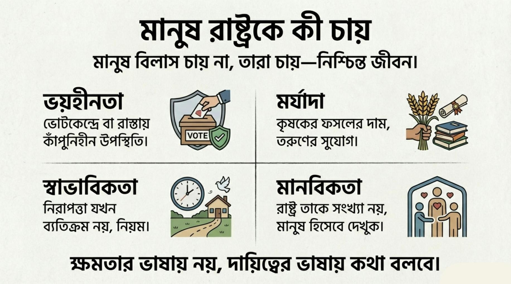
মানুষ বিলাস চায় না, তারা চায়—নিশ্চিন্ত জীবন।
মানুষ রাষ্ট্রের কাছে খুব বেশি কিছু চায় না। তারা বিলাস চায় না, বিশেষ সুবিধাও না। তারা চায়—নিশ্চিন্ত জীবন।
মানুষ চায় এমন একটি রাষ্ট্র, যেখানে ভোট দিতে দাঁড়ালে ভয় না লাগে, বাজারে গেলে দাম দেখে বুক কেঁপে না ওঠে, হাসপাতালের বারান্দায় দাঁড়িয়ে অসহায় বোধ করতে না হয়।
কৃষক চায়— তার ঘামকে অবমূল্যায়ন না করা হোক। ফসল ফলালে যেন দাম নিয়ে দুশ্চিন্তা না করতে হয়।
তরুণ চায়— নিজের যোগ্যতার জন্য একটি সুযোগ। সে চায় না করুণা, চায় সম্মান।
নারী চায়— রাস্তায় হাঁটার সময় রাষ্ট্রকে পাশে পেতে। নিরাপত্তা যেন ব্যতিক্রম না হয়ে স্বাভাবিক হয়।
সবচেয়ে বড় কথা, মানুষ চায় রাষ্ট্র তাকে সংখ্যা নয়, মানুষ হিসেবে দেখুক।
মানুষ এমন রাষ্ট্র চায়, যেটা কথা কম বলবে, কাজ বেশি করবে। যেটা ক্ষমতার ভাষায় নয়, দায়িত্বের ভাষায় কথা বলবে।
যখন মানুষের প্রশ্ন নীতির দরজায় কড়া নাড়ে
মানুষ প্রশ্ন করে। সব সময় উচ্চস্বরে নয়—কখনো নীরবতায়, কখনো অপেক্ষায়।
এই প্রশ্নগুলো মাঠে জন্ম নেয়, বাজারে ঘোরে, হাসপাতালের বারান্দায় বসে থাকে।
কিন্তু রাষ্ট্র শুধু মাঠে দাঁড়িয়ে থাকে না। রাষ্ট্রের একটি ভেতর আছে— ফাইল, নিয়ম, আদেশ আর দায়িত্বে ভরা।
মানুষ যেখানে দেখে ফলাফল, সেখানে কর্মকর্তা দেখে প্রক্রিয়া।
একই রাষ্ট্র— দুই রকম বাস্তবতা।
মানুষ ভাবে রাষ্ট্র উদাসীন। কর্মকর্তা ভাবে সে সীমাবদ্ধ।
এই দূরত্ব বোঝা না গেলে, কোনো সংস্কারই সম্পূর্ণ হয় না।
তাই এখন রাষ্ট্রকে দেখতে হবে আরেক চোখে— ভেতর থেকে।
পার্ট বি
কর্মকর্তার চোখে
অধ্যায় ১১
ফাইলের ভেতরের দেশ
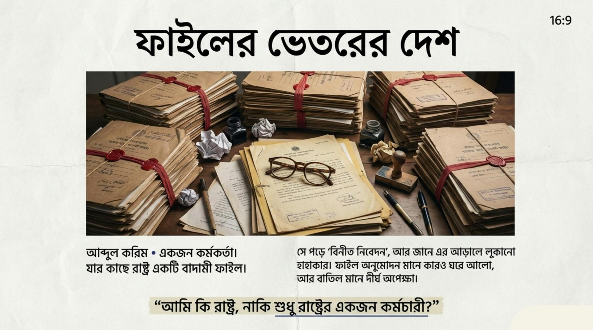
“আমি কি রাষ্ট্র, নাকি শুধু রাষ্ট্রের একজন কর্মচারী?”
রাষ্ট্র এখানে কোনো স্লোগান নয়। রাষ্ট্র এখানে একটি ফাইল।
বাদামী রঙের কভার। ভেতরে নোটশিট, আদেশ, স্বাক্ষর।
আব্দুল করিম প্রতিদিন সকাল নয়টার আগেই টেবিলে বসে। তার সামনে আজও কয়েকটি ফাইল। কিছু মোটা, কিছু পাতলা—কিন্তু কোনোটা হালকা নয়।
প্রথম ফাইলটা খুলতেই চোখে পড়ে একটি আবেদন। ভাষা ভদ্র, শব্দ পরিমিত। শেষ লাইনে লেখা— “বিনীত নিবেদন এই যে...”
করিম জানে, এই “বিনীত” শব্দের ভেতরে কতখানি অসহায়তা লুকানো থাকে।
সে নিজেও একসময় লাইনে দাঁড়ানো মানুষ ছিল। কিন্তু এখন সে লাইনের এপাশে।
তার দায়িত্ব— নিয়ম অনুযায়ী সিদ্ধান্ত নেওয়া। কিন্তু নিয়ম সব সময় মানুষের জীবনের সঙ্গে মেলে না।
অধ্যায় ১২
মাঠ আর মন্ত্রণালয়ের দূরত্ব
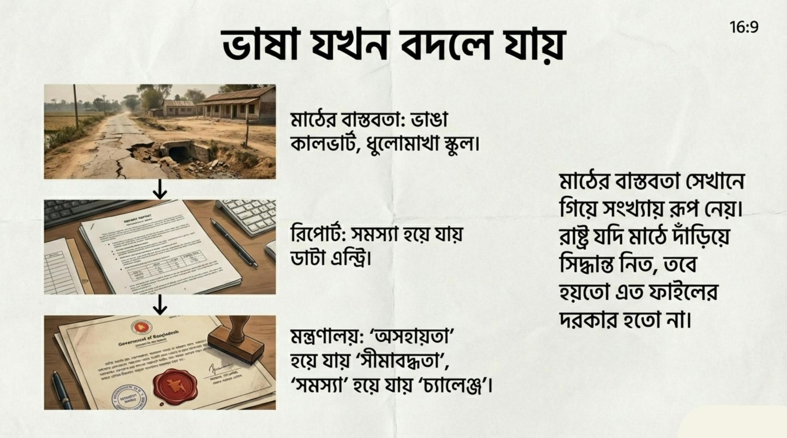
মাঠের বাস্তবতা ফাইলে সংখ্যা হয়ে যায়, আর ভাষা বদলে যায়।
মাঠটা কাদা মাখা। মন্ত্রণালয়ের মেঝে চকচকে।
এই দুই জায়গার মাঝখানে যে দূরত্ব, তা কিলোমিটারে মাপা যায় না।
করিম সকালে গাড়িতে চড়ে মাঠে যায়। রাস্তায় সে দেখে— ভাঙা কালভার্ট, ধুলোমাখা স্কুল, অস্থায়ী বাজার।
মাঠকর্মীরা অপেক্ষা করে থাকে। তাদের হাতে রিপোর্ট, ছবিসহ প্রস্তাব।
তারা বলে, — “স্যার, বাস্তবে যা আছে, কাগজে তা নেই।”
করিম শোনে। নোট নেয়। কিন্তু তার মাথায় ঘুরে— এই কথাগুলো মন্ত্রণালয়ে গিয়ে টিকবে তো?
ফেরার পথে গাড়িতে বসে সে জানে, মাঠের বাস্তবতা সেখানে গিয়ে সংখ্যায় রূপ নেয়। সংখ্যা আবার ফাইলে ঢুকে পড়ে।
মন্ত্রণালয়ে ঢুকেই ভাষা বদলে যায়। এখানে “সমস্যা” হয় “চ্যালেঞ্জ”, আর “অসহায়তা” হয় “সীমাবদ্ধতা”।
করিম ভাবে, রাষ্ট্র যদি মাঠে দাঁড়িয়ে সিদ্ধান্ত নিত, তবে হয়তো অনেক ফাইলের দরকার হতো না।
অধ্যায় ১৩
নিয়ম বনাম বাস্তবতা
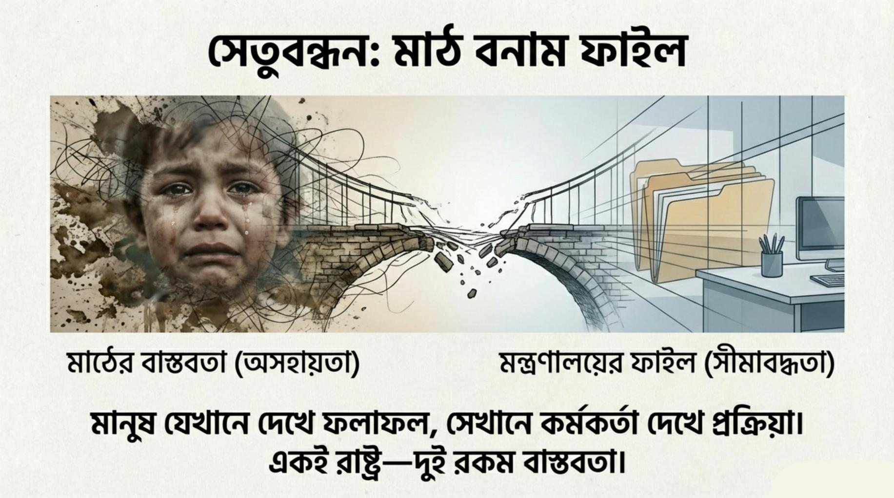
মানুষ যেখানে দেখে ফলাফল, সেখানে কর্মকর্তা দেখে প্রক্রিয়া।
নিয়ম রাষ্ট্রের মেরুদণ্ড। কিন্তু সব মেরুদণ্ড নমনীয় নয়।
একটি ফাইল আসে— নিয়ম অনুযায়ী আবেদনটি বাতিলযোগ্য।
কিন্তু করিম জানে, এই আবেদন বাতিল মানে একটি পরিবার আবার শূন্যে ফিরে যাওয়া।
তবু তার ভেতরে প্রশ্ন ওঠে— নিয়ম যদি মানুষকে বাদ দেয়, তবে নিয়ম কাকে রক্ষা করছে?
শেষ পর্যন্ত সে সিদ্ধান্ত নেয়। নিয়মের ভেতর থেকেই সামান্য জায়গা খোঁজে।
এটা কোনো বিপ্লব নয়। এটা ছোট একটি ফাঁক।
কিন্তু এই ছোট ফাঁক দিয়েই কখনো কখনো মানুষ বাঁচে।
অধ্যায় ১৪
আদেশ আসে, প্রশ্ন থাকে
আদেশ সাধারণত প্রশ্ন নিয়ে আসে না। আদেশ আসে—সংক্ষিপ্ত, স্পষ্ট, নির্দিষ্ট ভাষায়।
এক সকালে করিমের টেবিলে একটি নোট আসে। উপরে লেখা— “উপর মহলের নির্দেশ অনুযায়ী।”
এই বাক্যটা সে বহুবার পড়েছে। প্রতিবারই বাকিটুকু আলাদা হলেও, ওজনটা একই।
নির্দেশে বলা হয়েছে— একটি সিদ্ধান্ত দ্রুত বাস্তবায়ন করতে হবে।
করিম ফাইল দেখে। ডেটা দেখে। মাঠের রিপোর্টটা আবার পড়ে।
সবকিছু মিলছে না।
সে জানে, প্রশ্ন তোলা মানে সময় নেয়। সময় মানে অনীহা হিসেবে ধরা হয়।
সহকর্মী ফিসফিস করে বলে, — “এটা নিয়ে বেশি ভাবার দরকার নেই।”
করিম চুপ থাকে। কিন্তু তার ভেতরে প্রশ্নটা জোরে কথা বলে।
সে ভাবে, আমি যদি প্রশ্ন না করি, তবে এই রাষ্ট্রের ভেতরে প্রশ্নটা করবে কে?
তবু সে জানে— সব প্রশ্নের জায়গা ফাইলে থাকে না।
কিছু প্রশ্ন শুধু মানুষের মনে ঘোরে।
অধ্যায় ১৫
নিরপেক্ষ থাকার লড়াই
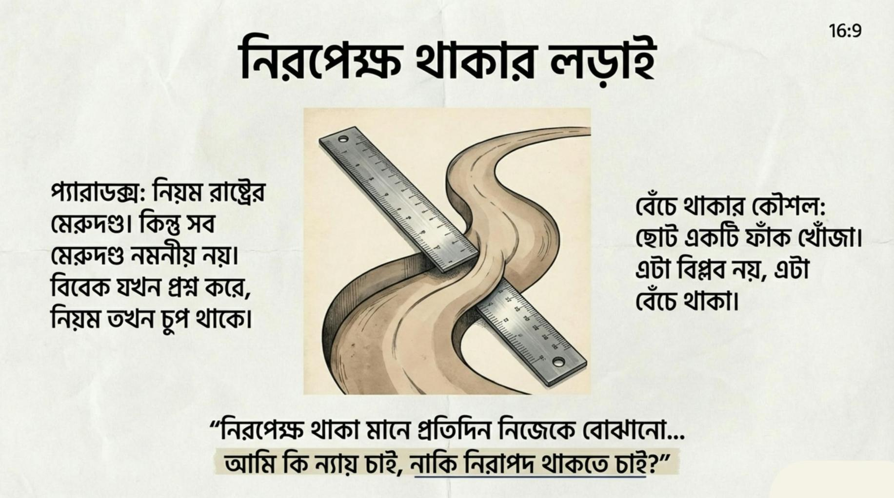
নিরপেক্ষতা কাগজে সহজ, বাস্তবে কঠিন।
নিরপেক্ষতা কাগজে সহজ। বাস্তবে কঠিন।
করিমের ডেস্কে সবাই আসে— কেউ সুপারিশ নিয়ে, কেউ অনুরোধ নিয়ে, কেউ শুধু নাম জানিয়ে।
সবাই বলে, — “আপনি তো নিরপেক্ষ মানুষ।”
এই প্রশংসাটাই সবচেয়ে বিপজ্জনক।
কারণ নিরপেক্ষতা মানে— কাউকে খুশি না করা।
কিন্তু রাষ্ট্র চলে মানুষের মাধ্যমেই। আর মানুষ নিরপেক্ষতা পছন্দ করে না— তারা ফল চায়।
একদিন করিম বুঝতে পারে, তার সিদ্ধান্তে কেউ সন্তুষ্ট নয়। কিন্তু নিয়ম অনুযায়ী সিদ্ধান্তটা ঠিক।
সে রাতে বাড়ি ফিরে আয়নার সামনে দাঁড়ায়। নিজেকে প্রশ্ন করে— আমি কি সত্যিই নিরপেক্ষ, নাকি শুধু নিরাপদ থাকতে চাই?
নিরপেক্ষ থাকা মানে প্রতিদিন নিজেকে বোঝানো। এটা কোনো পদ নয়। এটা একটি লড়াই।
অধ্যায় ১৬
ক্ষমতা বদলায়, ফাইল থাকে
ক্ষমতা বদলায় শব্দে। ফাইল বদলায় না।
নতুন সাইনবোর্ড লাগে। নতুন নাম আসে। কিন্তু আলমারির ভেতরের ফাইলগুলো ঠিক আগের জায়গাতেই থাকে।
করিম প্রথম দিনেই বুঝে যায়— পরিবর্তন মানে সব ভাঙা নয়, বরং পুরোনো কাঠামোর ওপর নতুন ভার বসানো।
নতুন নির্দেশ আসে। ভাষা বদলায়, উদ্দেশ্য নয়। আগে বলা হতো—“উপর মহলের সিদ্ধান্ত” এখন বলা হয়—“নীতিগত নির্দেশনা”
কিন্তু ফাইল খুললে করিম দেখে, একই সমস্যা, একই জট, একই সীমাবদ্ধতা।
একটা ফাইলে চোখ আটকে যায় তার। বছর তিনেক আগের আবেদন। তিনবার ফেরত গেছে, দুইবার সংশোধন হয়েছে।
এখন আবার টেবিলে।
করিম ভাবে, এই ফাইলটা কি অপেক্ষা করছে, নাকি মানুষটা?
ক্ষমতা বদলের সঙ্গে সঙ্গে সবাই আশা করে— এবার সব ঠিক হবে।
কিন্তু রাষ্ট্র এত দ্রুত বদলায় না। রাষ্ট্র বদলায় ধীরে, আর সেই ধীরতার বোঝা পড়ে ফাইলধারীদের কাঁধে।
করিম জানে— মানুষ ভাবে কর্মকর্তা বদলায় না। কিন্তু সে জানে— কর্মকর্তার ভেতর প্রতিদিন কিছু না কিছু বদলায়।
ক্ষমতা বদলায় শব্দে। ফাইল বদলায় না। কেবল সেই বদলটা দেখা যায় না।
অধ্যায় ১৭
একজন কর্মকর্তার নীরব স্বীকারোক্তি
কখনো কখনো করিম কথা বলতে চায়। কিন্তু জানে— এই রাষ্ট্রে সব কথা বলার জায়গা নেই।
তার সহকর্মীরা ভাবে, সে শান্ত। কিন্তু এই শান্ততার ভেতর জমে আছে বহু অসমাপ্ত বাক্য।
রাতে বাড়ি ফিরে সে ফাইল খোলে না। কিন্তু ফাইল তার মাথা ছাড়ে না।
সে ভাবে— আমি কতজনের জীবনে প্রভাব ফেলেছি, আর কতজনের জীবনে পৌঁছাতে পারিনি?
কেউ তাকে কখনো শেখায়নি— যখন নিয়ম আর ন্যায় মুখোমুখি দাঁড়ায়, তখন কী করতে হয়।
প্রশিক্ষণে শেখানো হয়েছে ধারা, উপধারা। কিন্তু বিবেকের কোনো অধ্যায় ছিল না।
করিম স্বীকার করে— কখনো সে সাহস করেনি। কখনো সে নিরাপত্তাকেই বেছে নিয়েছে। এটা দুর্বলতা? নাকি টিকে থাকার কৌশল?
সে জানে— সব সিদ্ধান্ত সে নেয়নি, কিন্তু সব সিদ্ধান্তের দায় কিছুটা হলেও তার।
এই দায়ের ওজনই তাকে নীরব করে দিয়েছে।
তবু সে পুরোপুরি নিরাশ নয়।
কারণ সে দেখেছে— ছোট সিদ্ধান্তও বড় পার্থক্য তৈরি করতে পারে। একটা ফাইল এগিয়ে দেওয়া, একটা আবেদন আটকে না রাখা।
এই ছোট কাজগুলো দিয়েই সে নিজেকে বোঝায়— রাষ্ট্র এখনো পুরোপুরি অমানবিক হয়ে যায়নি।
এই নীরব স্বীকারোক্তি সে কাউকে শোনায় না। কিন্তু প্রতিদিন নিজের কাছে বলে—
“আমি চেষ্টা করেছি।”
পার্ট সি
রাজনীতিবিদের চোখে
অধ্যায় ১৯
সিদ্ধান্তের টেবিল
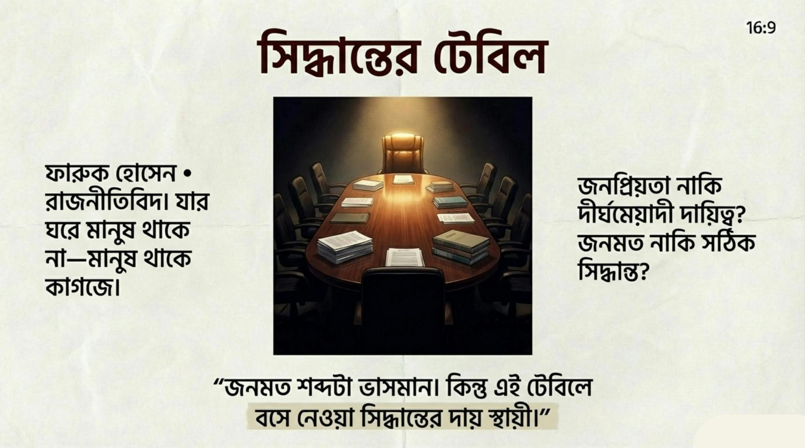
সিদ্ধান্তের টেবিল — একদিকে নথি, আরেকদিকে সময়ের চাপ।
টেবিলটা বড়। কিন্তু জায়গা কম। একদিকে নথি, আরেকদিকে সময়ের চাপ। ফারুক হোসেন টেবিলের মাথায় বসে। তার সামনে কয়েকজন উপদেষ্টা। কথা হচ্ছে কম, নোট হচ্ছে বেশি।
এই ঘরে সিদ্ধান্ত হয়। কিন্তু এই ঘরে মানুষ থাকে না— মানুষ থাকে কাগজে। ফারুক জানে, একটি সিদ্ধান্ত মানে শুধু আজ নয়— আগামী পাঁচ বছর। একটি শব্দ বদলালে হাজার মানুষের জীবন বদলায়।
কেউ বলে, — “জনমত এখন অনুকূলে।” ফারুক জানে, জনমত শব্দটা ভাসমান। আজ যা অনুকূলে, কাল তা বিপক্ষে। সে জিজ্ঞেস করে, — “এতে মানুষের কী হবে?” ঘরে একটু নীরবতা নামে। কারণ এই প্রশ্নের উত্তর সংখ্যায় দেওয়া কঠিন।
ফারুক রাজনীতি শিখেছে মাঠে। সে জানে মানুষের রাগ, মানুষের আশা। কিন্তু টেবিলে বসলে এই দুটোই দূরে সরে যায়। এখানে আসে কৌশল। সমীকরণ। সম্ভাবনা।
সে ভাবে— আমি কি নেতা, নাকি হিসাবরক্ষক? একটি ফাইল সে আলাদা করে রাখে। ওখানে লেখা— “সংস্কার প্রস্তাব।” সবাই জানে, এই ফাইল খুললে ঝুঁকি আছে। সংস্কার মানে কারও সুবিধা কমবে।
ফারুক জানে— জনপ্রিয়তা আর দায়িত্ব সব সময় এক পথে হাঁটে না। সে কলম হাতে নেয়। একবার টেবিলে ঠুকে রাখে। আবার তুলে নেয়। এই টেবিলে বসে সবচেয়ে কঠিন কাজটা হলো— আজকের লাভ ছেড়ে আগামীর দায় নেওয়া।
সে শেষ পর্যন্ত বলে, — “আমরা যদি এখন না করি, ইতিহাস করবে।” ঘরে কেউ হাততালি দেয় না। কিন্তু সবাই বোঝে— এই কথার ওজন আছে। ফারুক জানে, এই সিদ্ধান্তের প্রশংসা সে পাবে না। কিন্তু হয়তো একদিন কেউ বলবে— “এটা দরকার ছিল।”
অধ্যায় ২০
জনতা, জনমত ও দায়
জনতা কথা বলে নানা ভাষায়। কখনো স্লোগানে, কখনো নীরবতায়। ফারুক হোসেন জানে— জনমত আর জনতা এক জিনিস নয়।
জনমত তৈরি হয় জরিপে, আলোচনায়, শিরোনামে। জনতা তৈরি হয় জীবনে— দাম বাড়লে, চাকরি না পেলে, নিরাপত্তা কমলে।
এক বৈঠকে উপদেষ্টা বলে, — “এই সিদ্ধান্তে জনমত আমাদের পক্ষে।” ফারুক জানে, এই বাক্যটা অর্ধেক সত্য। কারণ জনমত বদলায় দ্রুত। কিন্তু দায় বদলায় না।
সে মাঠে নামলে মানুষ হাত মেলায়। কেউ অভিযোগ করে, কেউ আশা করে। সবাই চায় সে শুনুক। ফারুক শোনে। কিন্তু সব কথা একসাথে টেবিলে বসে না। টেবিলে বসে কিছু কথা ঝরে পড়ে। শুধু যেগুলো সংখ্যায় ধরা যায়, সেগুলো টিকে থাকে।
সে ভাবে, আমি কি মানুষের প্রতিনিধি, নাকি জনমতের অনুসারী? এই দুইয়ের পার্থক্যটা রাজনীতির সবচেয়ে সূক্ষ্ম জায়গা। জনতা চায় ফল। রাজনীতি চায় সময়। এই দুইয়ের মাঝে দায় নামের একটা শব্দ দাঁড়িয়ে থাকে— যেটা এড়িয়ে যাওয়া যায় না।
অধ্যায় ২১
ক্ষমতার লোভ বনাম রাষ্ট্রের প্রয়োজন
ক্ষমতা নিজের মতো করে কথা বলে। সে যুক্তি দেয়, সে ভয় দেখায়, সে স্বপ্ন দেখায়। ফারুক অনেক রাজনীতিবিদকে দেখেছে— যারা ক্ষমতায় এসে বদলে গেছে। আরও বেশি দেখেছে— যারা ক্ষমতা ছাড়তে গিয়ে হারিয়ে গেছে।
সে জানে, ক্ষমতা থাকলে কাজ করা যায়। কিন্তু ক্ষমতার লোভ কাজকে গ্রাস করে। একটি প্রস্তাব আসে— জনপ্রিয়, সহজ, তাৎক্ষণিক ফল দেবে। আরেকটি প্রস্তাব পড়ে থাকে— কঠিন, অজনপ্রিয়, কিন্তু দীর্ঘমেয়াদি।
ফারুক দুইটা কাগজই হাতে নেয়। একটা হালকা লাগে। আরেকটা ভারী। সে ভাবে, রাষ্ট্র কোনটা চায়? এই প্রশ্নের উত্তর ক্ষমতা দেয় না। দায় দেয়।
ক্ষমতা চায় আজকের করতালি। রাষ্ট্র চায় আগামী দিনের স্থিতি। ফারুক জানে, সবাই তাকে নেতা হিসেবে বিচার করবে। কিন্তু ইতিহাস বিচার করবে সিদ্ধান্ত দিয়ে।
সে নিজের সঙ্গে নিজে চুক্তি করে— ক্ষমতা থাকবে উপায় হিসেবে, লক্ষ্য হিসেবে নয়। এই চুক্তি ভাঙা সহজ। রক্ষা করা কঠিন। কিন্তু সে জানে— যেদিন এই চুক্তি ভাঙবে, সেদিন রাষ্ট্র আর তার অগ্রাধিকার থাকবে না।
অধ্যায় ২২
ইতিহাস কী শেখায়
ইতিহাস বইয়ে থাকে না শুধু। ইতিহাস থাকে সিদ্ধান্তের ফলাফলে। ফারুক হোসেন জানে— আজ যে সিদ্ধান্ত সে নেয়, তা আগামীকাল ইতিহাসের এক লাইনে পরিণত হবে।
সে পুরোনো নথি পড়ে। পুরোনো ভাষণ শোনে। আগের নেতাদের ছবি দেখে। সবাই একসময় আত্মবিশ্বাসী ছিল। সবাই ভেবেছিল— তারা ঠিক কাজটাই করছে। কিন্তু ইতিহাস কাউকে তার উদ্দেশ্য দিয়ে বিচার করে না। ইতিহাস বিচার করে ফল দিয়ে।
ফারুক ভাবে, কত সিদ্ধান্ত তখন “প্রয়োজন” মনে হয়েছিল, কিন্তু পরে “ভুল” হিসেবে লেখা হয়েছে।
ইতিহাস তাকে ভয় দেখায় না। বরং সাবধান করে। সে বুঝেছে— ক্ষমতা চিরস্থায়ী নয়, কিন্তু সিদ্ধান্তের ছাপ স্থায়ী। ইতিহাস শেখায়— যে নেতা প্রশ্ন শুনতে ভয় পায়, তার সিদ্ধান্ত ভুলের দিকে যায়।
তাই সে এখন প্রশ্নকে শত্রু ভাবে না। প্রশ্নকে সে সতর্কবার্তা ভাবে।
অধ্যায় ২৩
ভুল, অনুশোচনা ও শিক্ষা
ভুল মানতে রাজনীতি ভয় পায়। কারণ ভুল মানা মানে দুর্বলতা স্বীকার। ফারুক জানে, তার সিদ্ধান্তেও ভুল আছে। কিছু ভুল সে তখন বুঝতে পারেনি। কিছু বুঝেছিল, কিন্তু বদলাতে পারেনি।
রাতে একা বসে সে ভাবে— যদি সময় ফিরত, আমি কি ভিন্ন কিছু করতাম? এই প্রশ্নের উত্তর সে প্রকাশ্যে দেয় না। কিন্তু ভেতরে ভেতরে এই প্রশ্নই তাকে বদলায়।
ভুল থেকে শিক্ষা না নিলে ক্ষমতা কেবল পুনরাবৃত্তি করে। ফারুক শিখেছে— সব ভুল সংশোধন করা যায় না, কিন্তু স্বীকার করা যায়। অনুশোচনা মানে থেমে যাওয়া নয়। অনুশোচনা মানে দিক বদলানো।
সে সিদ্ধান্ত নেয়— ভবিষ্যতের সিদ্ধান্তে অতীতের ভুল যেন কথা বলে। এটা কোনো নাটকীয় ঘোষণা নয়। এটা নীরব অঙ্গীকার।
অধ্যায় ২৪
সংস্কার কেন জরুরি
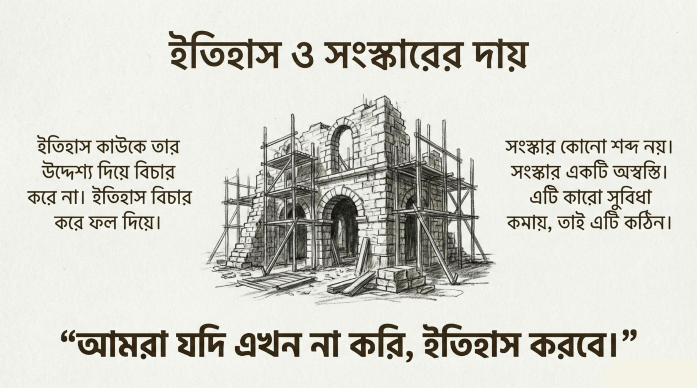
সংস্কার শব্দ নয়, একটি অস্বস্তি। তাই এটি কঠিন।
সংস্কার কোনো শব্দ নয়। সংস্কার একটি অস্বস্তি।
ফারুক হোসেন জানে— যে ব্যবস্থায় সে কাজ করছে, সেটা একদিনে তৈরি হয়নি। আর একদিনে বদলাবেও না।
সংস্কার মানে কাউকে না কাউকে অসন্তুষ্ট করা। কারও সুবিধা কমবে, কারও ক্ষমতা সংকুচিত হবে। এই কারণেই সংস্কার সবচেয়ে কঠিন সিদ্ধান্ত।
উপদেষ্টা বলে, — “সময়টা ঠিক না।”
ফারুক জানে, সংস্কারের জন্য কখনোই সময় “ঠিক” হয় না।
যে ব্যবস্থা কাজ করছে না, তাকে ঠিক করার জন্য সাহস দরকার। আর সাহস মানেই ঝুঁকি।
সে দেখে— মানুষ রাষ্ট্রকে বিশ্বাস করছে না। কর্মকর্তা নিয়মে আটকে। রাজনীতি জনপ্রিয়তায় বন্দি।
এই তিন জায়গায় একসাথে হাত না দিলে কোনো পরিবর্তন টেকে না। সংস্কার মানে শুধু আইন বদলানো নয়। সংস্কার মানে— দায়বদ্ধতা ফিরিয়ে আনা, ক্ষমতার সীমা টানা, আর প্রশ্ন করার জায়গা খোলা রাখা।
সংস্কার করলে সে জনপ্রিয়তা হারাতে পারে। কিন্তু সংস্কার না করলে রাষ্ট্র ভবিষ্যৎ হারাবে। এই হিসাবটাই রাজনীতির সবচেয়ে কঠিন অঙ্ক।
অধ্যায় ২৫
রাষ্ট্র বনাম দল
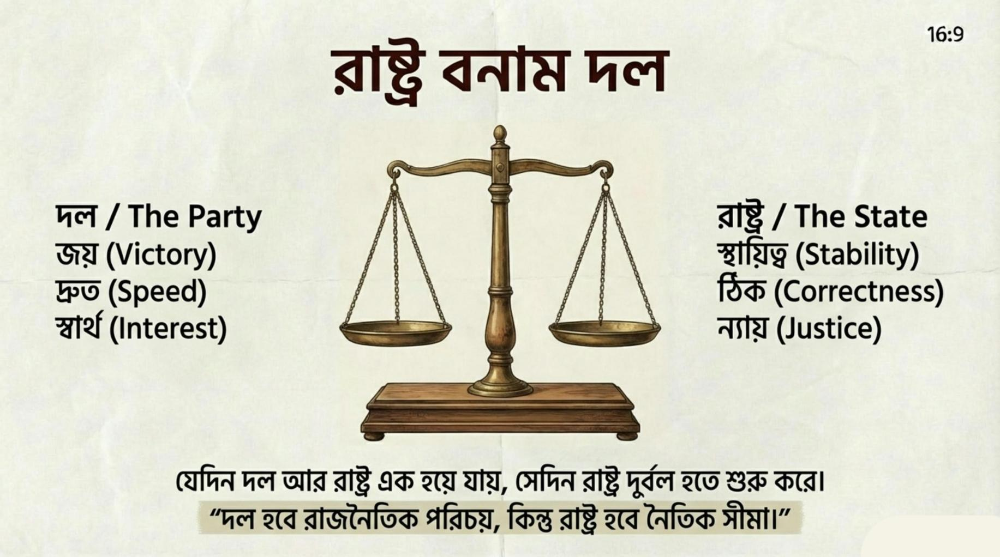
দল প্রয়োজন। রাষ্ট্র তার চেয়েও বড়।
দল প্রয়োজন। রাষ্ট্র তার চেয়েও বড়।
ফারুক এই সত্যটা শিখেছে দেরিতে। কারণ রাজনীতি শুরু হয় দল দিয়ে, কিন্তু দায়িত্ব শুরু হয় রাষ্ট্র দিয়ে।
দলের ভেতরে শৃঙ্খলা দরকার। কিন্তু রাষ্ট্রের ভেতরে দরকার ন্যায়।
এক বৈঠকে কেউ বলে, — “এটা আমাদের দলের স্বার্থে যাবে।”
ফারুক থামে। প্রশ্ন করে, — “রাষ্ট্রের কী হবে?”
এই প্রশ্নটা ঘরে ভারী হয়ে পড়ে।
দল চায় জয়। রাষ্ট্র চায় স্থায়িত্ব। দল চায় সিদ্ধান্ত দ্রুত। রাষ্ট্র চায় সিদ্ধান্ত ঠিক।
ফারুক জানে— যেদিন দল আর রাষ্ট্র এক হয়ে যায়, সেদিন রাষ্ট্র দুর্বল হতে শুরু করে।
সে সিদ্ধান্ত নেয়— দল হবে তার রাজনৈতিক পরিচয়, কিন্তু রাষ্ট্র হবে তার নৈতিক সীমা।
এই সীমা রক্ষা করা সহজ নয়। কারণ দল কাছের, রাষ্ট্র দূরের মনে হয়।
কিন্তু ইতিহাস দূরের কথাই মনে রাখে।
ফারুক বোঝে— রাষ্ট্রকে দলের ওপরে না রাখলে, শেষ পর্যন্ত দলও টেকে না।
অধ্যায় ২৬
একটি নতুন শুরুর প্রস্তাব
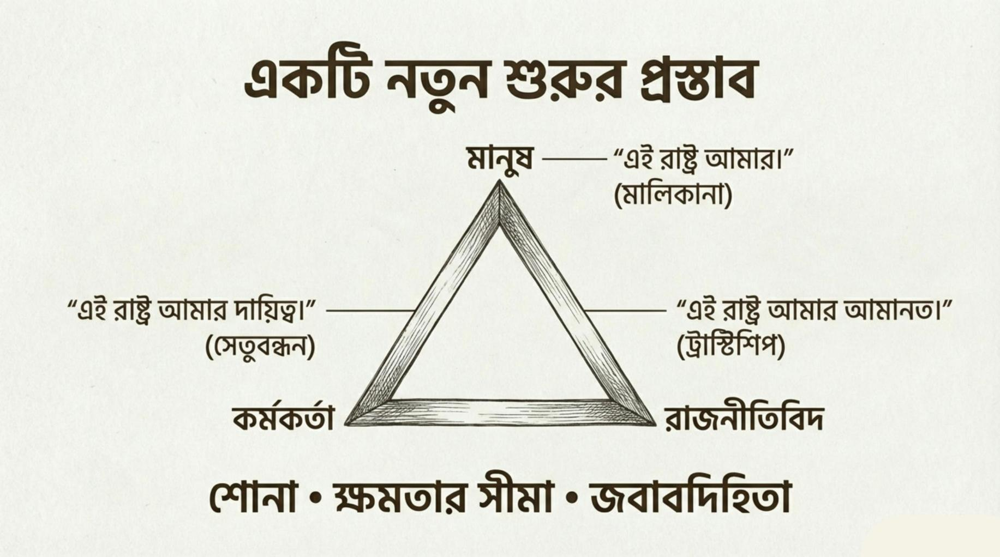
সীমা, দায়িত্ব আর জবাবদিহিতার ত্রিভুজ।
নতুন শুরু মানে সবকিছু নতুন করে লেখা নয়। নতুন শুরু মানে—পুরোনো ভুলগুলো চিনে নেওয়া।
এই রাষ্ট্রকে মানুষ দেখেছে লাইনে দাঁড়িয়ে। কর্মকর্তা দেখেছে ফাইলের ভেতর দিয়ে। রাজনীতিবিদ দেখেছে সিদ্ধান্তের টেবিল থেকে।
তিন চোখে তিন ছবি। কিন্তু রাষ্ট্র একটাই।
মানুষ চেয়েছে নিরাপত্তা, সম্মান, নিশ্চয়তা। খুব সাধারণ কিছু চাওয়া। যেগুলো না পেলে রাষ্ট্র বড় মনে হয়, কিন্তু আপন মনে হয় না।
কর্মকর্তা চেয়েছে কাজ করার জায়গা। নিয়মের ভেতর মানবিক হওয়ার সুযোগ। সে চায়নি ক্ষমতা— সে চেয়েছে দায়িত্ব যেন বোঝা না হয়ে যায়।
রাজনীতিবিদ চেয়েছে পরিবর্তন। কিন্তু বুঝেছে— পরিবর্তন মানে স্লোগান নয়, পরিবর্তন মানে ঝুঁকি নেওয়া।
এই তিন চাওয়া আলাদা নয়। আলাদা মনে হয়, কারণ তারা একসাথে কথা বলে না।
নতুন শুরুর প্রথম শর্ত তাই— শোনা। রাষ্ট্রকে আগে শিখতে হবে শুনতে। মানুষের নীরবতা, কর্মকর্তার সীমাবদ্ধতা, রাজনীতিবিদের দায়— সব একসাথে শুনতে হবে।
নতুন শুরুর দ্বিতীয় শর্ত— সীমা। ক্ষমতার সীমা থাকতে হবে। দলের সীমা থাকতে হবে। নিয়মেরও সীমা থাকতে হবে— যেখানে মানুষ হারিয়ে যায়, সেখানে নিয়ম থামবে।
নতুন শুরুর তৃতীয় শর্ত— দায়বদ্ধতা। যে সিদ্ধান্ত নেয়, সে জবাব দেবে। যে দায়িত্ব পায়, সে পালাবে না। আর যে ভোগে, তার কথা গুরুত্ব পাবে।
রাষ্ট্র তখনই বদলায়, যখন মানুষ নিজেকে তার অংশ মনে করে। আর কর্মকর্তা নিজেকে যন্ত্র নয়, সেতু মনে করে। আর রাজনীতিবিদ ক্ষমতাকে উপায় মনে করে, লক্ষ্য নয়।
এই বই কোনো রায় দেয় না। কাউকে দোষী সাব্যস্ত করে না।
এই বই শুধু বলে— রাষ্ট্র একা বদলায় না। রাষ্ট্র বদলায়, যখন মানুষ প্রশ্ন করে, কর্মকর্তা বিবেক রাখে, আর রাজনীতিবিদ সাহস দেখায়।
নতুন শুরু তাই কোনো নির্দিষ্ট দিনের নাম নয়। নতুন শুরু হলো একটি মানসিকতা।
যেদিন মানুষ বলবে— “এই রাষ্ট্র আমার।”
যেদিন কর্মকর্তা বলবে— “এই রাষ্ট্র আমার দায়িত্ব।”
যেদিন রাজনীতিবিদ বলবে— “এই রাষ্ট্র আমার আমানত।”
সেদিন রাষ্ট্র সত্যিকার অর্থে শুরু হবে।
এই বই এখানেই শেষ। কিন্তু রাষ্ট্রের গল্প এখানেই শেষ নয়।
কারণ রাষ্ট্র— একটি চলমান সিদ্ধান্ত।
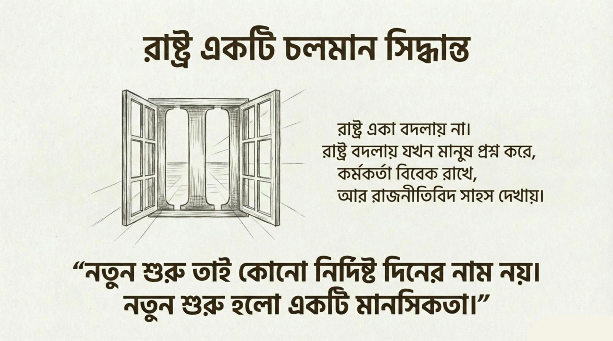
নতুন শুরু হলো একটি মানসিকতা।শেষ কথা
লেখকের নোট
“রাষ্ট্রকে দেখা তিন চোখে” কোনো প্রচারণার বই নয়। এটি একটি বোঝাপড়ার প্রয়াস।
যদি এই বই পড়ে একজন মানুষ প্রশ্ন করে, একজন কর্মকর্তা থামে, একজন রাজনীতিবিদ দ্বিধা করে— তবেই এই লেখা সার্থক।
সম্পাদকীয়
তিন চোখ, এক রাষ্ট্র
এই বই কোনো প্রচারণার বই নয়। এটি একটি বোঝাপড়ার প্রয়াস।
রহিম লাইনে দাঁড়িয়ে রাষ্ট্রকে দেখে। করিম ফাইল খুলে দেখে। ফারুক টেবিলে বসে দেখে। তিন চোখে তিন ছবি। কিন্তু রাষ্ট্র একটাই।
মানুষ চেয়েছে নিরাপত্তা, সম্মান, নিশ্চয়তা। খুব সাধারণ কিছু চাওয়া। যেগুলো না পেলে রাষ্ট্র বড় মনে হয়, কিন্তু আপন মনে হয় না।
কর্মকর্তা চেয়েছে কাজ করার জায়গা। নিয়মের ভেতর মানবিক হওয়ার সুযোগ। সে চায়নি ক্ষমতা—সে চেয়েছে দায়িত্ব যেন বোঝা না হয়ে যায়।
রাজনীতিবিদ চেয়েছে পরিবর্তন। কিন্তু বুঝেছে—পরিবর্তন মানে স্লোগান নয়, পরিবর্তন মানে ঝুঁকি নেওয়া।
এই তিন চাওয়া আলাদা নয়। আলাদা মনে হয়, কারণ তারা একসাথে কথা বলে না।
রহিম, করিম ও ফারুক কোনো নির্দিষ্ট মানুষের নাম নন। তাঁরা লাইন, দপ্তর ও টেবিলের অভিজ্ঞতা থেকে গড়া। তাঁদের গল্প দিয়ে বলা হয়েছে যা সংখ্যায় হারিয়ে যায়।
এই বই রায় দেয় না। কাউকে দোষী সাব্যস্ত করে না। এই বই শুধু বলে—রাষ্ট্র একা বদলায় না। রাষ্ট্র বদলায়, যখন মানুষ প্রশ্ন করে, কর্মকর্তা বিবেক রাখে, আর রাজনীতিবিদ সাহস দেখায়।
নতুন শুরু কোনো নির্দিষ্ট দিনের নাম নয়। নতুন শুরু হলো একটি মানসিকতা। যেদিন মানুষ বলবে—“এই রাষ্ট্র আমার।” যেদিন কর্মকর্তা বলবে—“এই রাষ্ট্র আমার দায়িত্ব।” যেদিন রাজনীতিবিদ বলবে—“এই রাষ্ট্র আমার আমানত।” সেদিন রাষ্ট্র সত্যিকার অর্থে শুরু হবে।
যদি এই বই পড়ে একজন মানুষ প্রশ্ন করে, একজন কর্মকর্তা থামে, একজন রাজনীতিবিদ দ্বিধা করে—তবেই এই লেখা সার্থক।
লেখক
আবু মোঃ মনিরুজ্জামান
বিসিএস কৃষি, (৩১তম) ২৮৩৮ক।
এই বইয়ের লেখক দপ্তরের মানুষ। ফাইলের ভেতর দিয়েই সে রাষ্ট্রকে প্রথম চেনে। কিন্তু মাঠে গেলে সে দেখে—কাগজে লেখা উপকারের সাথে, বাস্তবের ব্যবধান বিস্তর।
চাকরিসূত্রে নাটোরের চলন বিল, সুনামগঞ্জের হাওর, রাংগামাটির পাহাড় কিংবা বর্তমানে কুড়িগ্রামের মাটিতে সে কৃষকের খাতা দেখেছে, নার্সারির হিসাব দেখেছে, উপকরণ ব্যবহারে বৈচিত্র্যসহ ভর্তুকির লাইন দেখেছে। সেখান থেকেই রহিমের অপেক্ষা, করিমের নীরবতা, ফারুকের ঝুঁকি—তিন চোখ একসাথে খোলার চেষ্টা।
নীতিপত্রে সে লিখেছে কৃষি, ডিজিটাল শাসন, সার ভর্তুকি, কৃষক কার্ড। এই বই সেই নীতির অনুবাদ নয়। এই বই সেই নীতির আগে যে মানুষ দাঁড়িয়ে থাকে, তার গল্প।
গ্রন্থপঞ্জি
যে খাতা থেকে ফিরে আসা
এই বই কোনো গবেষণাপত্র নয়। তবু যে মাঠ ও নীতির সীমানায় দাঁড়িয়ে এই চোখ খোলা, সেখানকার কিছু পথচিহ্ন নিচে রাখা হলো। এগুলো উদ্ধৃতি নয়—এগুলো সেই কাজের খাতা, যেখান থেকে লেখক ফিরে এসেছে গল্পে।
BNP Policy Portalকৃষি নীতি, ই-গভর্নেন্স ও মাঠের কাজের একটি খোলা জানালা।